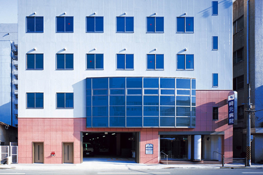

テキストテキストテキストテキストテキストテキストテキストテキストテキスト…

〒892-0842 鹿児島市東千石町4-13
TEL:099-224-5650 / FAX:099-224-0747
〒891-0122 鹿児島市南栄5丁目10-19
TEL:099-210-0201 / FAX:099-210-0203
〒892-0871 鹿児島市吉野町5147
TEL:099-243-5111 / FAX:099-243-5113